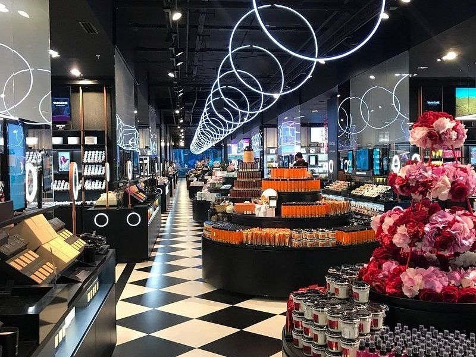
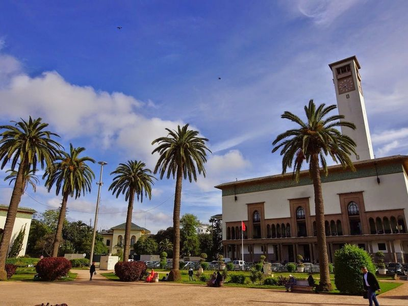
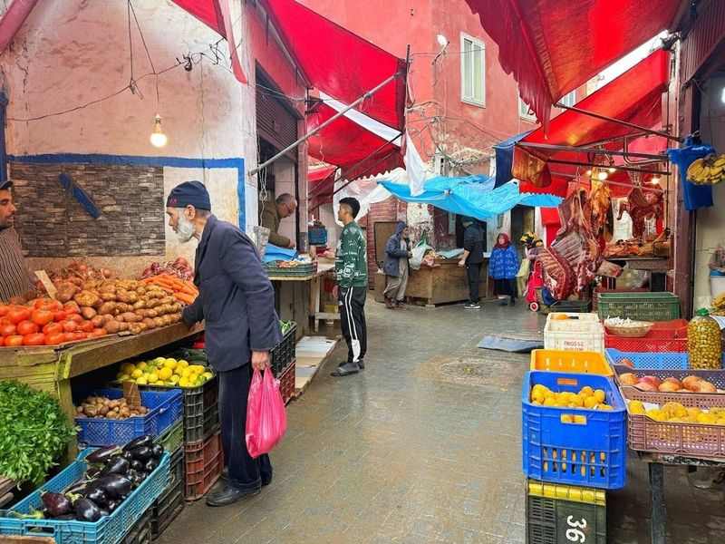
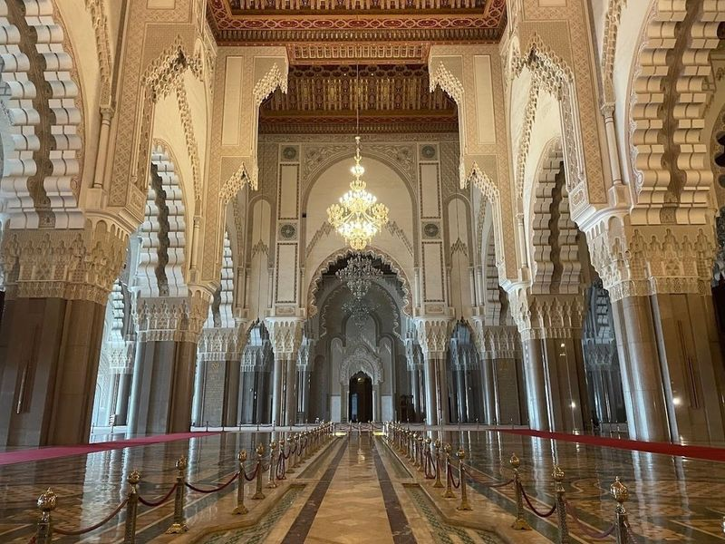
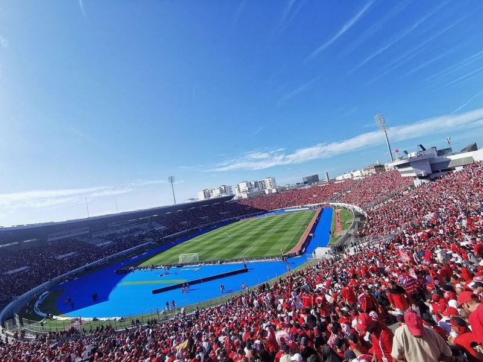
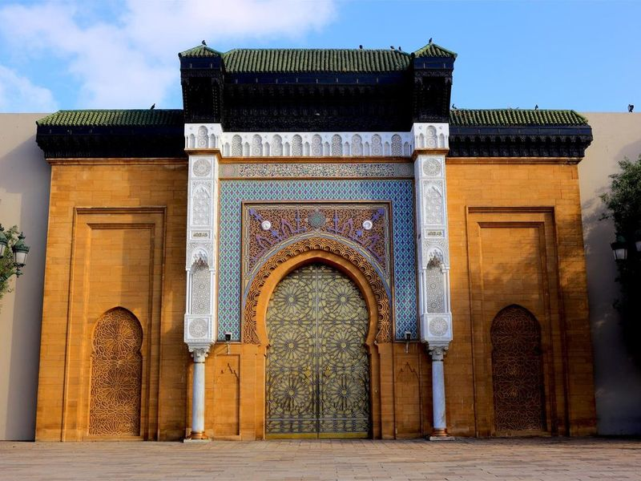
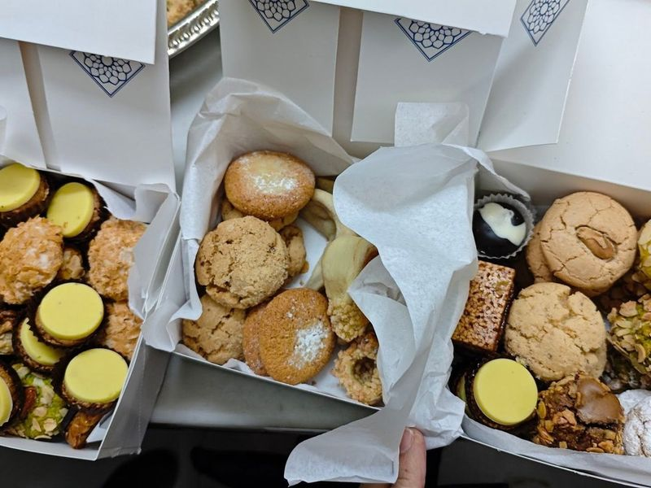
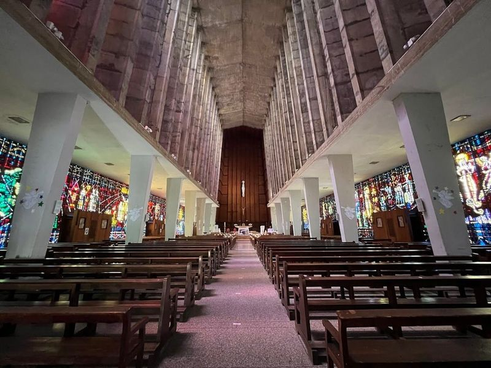
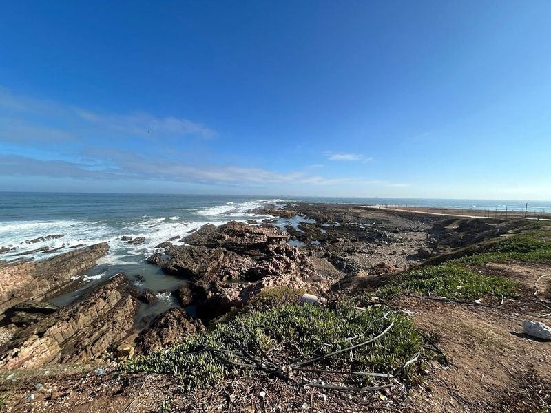
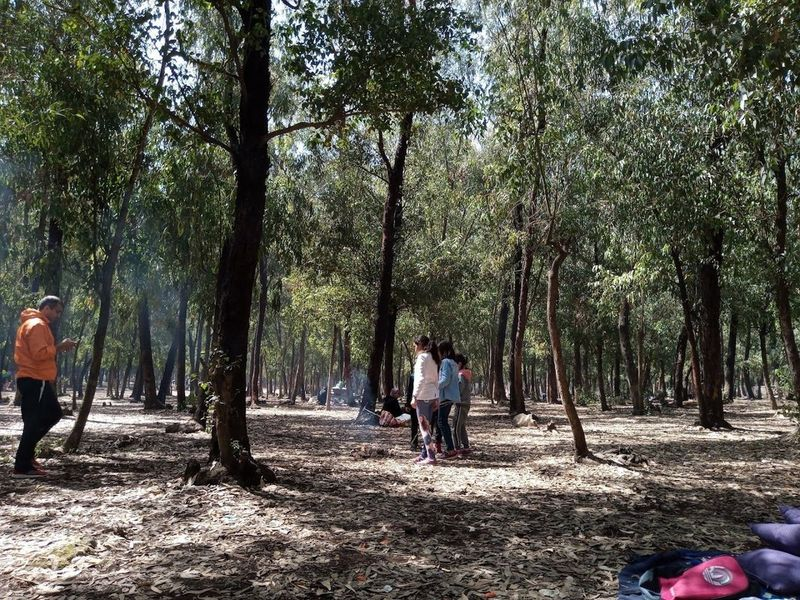

Explore Casablanca
A Brief History
Casablanca expanded from a small Atlantic port after the French protectorate made it Morocco's economic capital in the early 20th century. Art Deco and Mauresque civic buildings, the Hassan II Mosque completed in 1993, and the historic medina reflect colonial planning and post-independence growth. As the country's largest city and main port, Casablanca links Atlantic trade with inland Moroccan markets and industry.
Attractions Map
Top Sights & Activities

Morocco Mall
Morocco Mall is a prominent and luxurious shopping destination sprawled across 24 acres. It features a traditional souk, an IMAX cinema showcasing English-speaking films, and an expansive selection of dining options. The mall also boasts a large aquarium visible from the center without requiring entry fees, as well as Adventureland, an underground theme park with various rides and an ice rink.

Mohammed V Square
Mohammed V Square, built in 1916 during the French Protectorate, is a significant urban space in Casablanca. It was designed by French Governor Louis Hubert Lyautey and architects Henri Prost and Joseph Marrast. The square is surrounded by important public administrative buildings such as the Prefecture, Government Regional Delegation, French Consulate, Post office, State Bank of Morocco, and Palace of Justice.

Medina Market
The Medina Market in Casablanca, Morocco, may not be as bustling as those in Marrakesh or Fes, but it still offers a glimpse into traditional Moroccan medina life. While some parts of the neighborhood are rundown residential buildings, the market features a variety of shops selling fresh produce, fish and meat, clothing stores, and a more touristy area known as the Old Medina Market.

Hassan II Mosque
The Hassan II Mosque, completed in 1993, is a grand oceanfront mosque located in Casablanca. It is the second-largest mosque in Africa and can accommodate up to 25,000 worshipers. The mosque offers guided tours for non-Muslims and features a unique glass floor that allows Muslims to pray directly over the sea.

Mohammed V Stadium
The Mohamed Abdelmonem Stadium, situated in Casablanca, Morocco, is a renowned sports venue that attracts large crowds for club and international soccer matches. It holds a significant place in the city's sports scene and has a rich history of hosting football games, international events, and cultural performances. Despite some issues with gate closures before matches, the stadium offers an intoxicating ambiance for sports enthusiasts.

Royal Palace
The Royal Palace in Casablanca is a example of Islamic architecture, showcasing richly-decorated arches and doors on its main facade. Although visitors can only admire the exterior, the palace's exceptional design makes it a worthwhile stop, especially when combined with nearby attractions like Quartier Habous and Mahkama du Pacha palace.

Pâtisserie Bennis Habous
Pâtisserie Bennis Habous is a renowned family-owned bakery that has been serving up delectable Moroccan treats since 1930. Located in the vibrant Quartier Habous, this charming 1930s shop boasts a colorful tiled exterior and is famous for its handcrafted sweet and savory pastries. The bakery, now operated by the fourth generation of the Bennis family, is celebrated for its signature cornes de gazelle - almond paste cookies infused with orange blossom water.

Church of Notre Dame of Lourdes
The Church of Notre Dame of Lourdes is a modern Catholic church in Casablanca, Morocco, built in 1954. It stands out for its striking stained-glass windows designed by the renowned French artist Gabriel Loire. As one of only two Catholic churches in the city, it's a attraction and a rare sight in a predominantly Muslim country.

El Hank Lighthouse
El Hank Lighthouse, a structure built in 1916, stands tall at 167 feet along Boulevard de la Corniche. This lighthouse features an inner spiral staircase that leads you up 256 steps to panoramic views of Casablanca and the shimmering sea. Known for its striking white stone tower, it flashes a guiding light every 15 seconds, marking it as the tallest traditional lighthouse in Morocco and a vital landmark for sailors approaching the city.

Bouskoura forest.
Parc Murdoch, a 4-hectare urban park established in 1907, offers a serene retreat in Casablanca. The well-maintained park features wide jogging paths, gardens with flowering trees and shrubs, and a playground. Visitors can enjoy the peaceful atmosphere while strolling along the bench-lined paths or engaging in various sports activities. Despite suffering from drought conditions like much of the country, the park is praised for its cleanliness and tranquility.